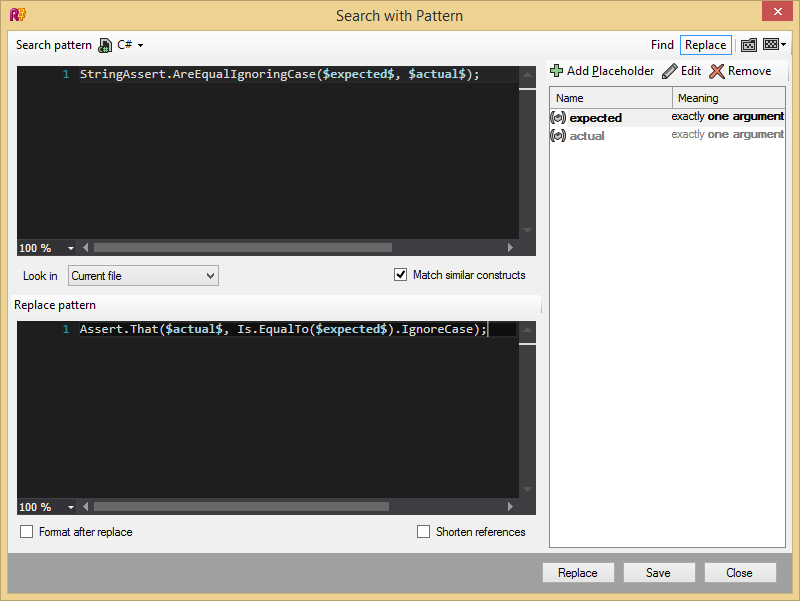
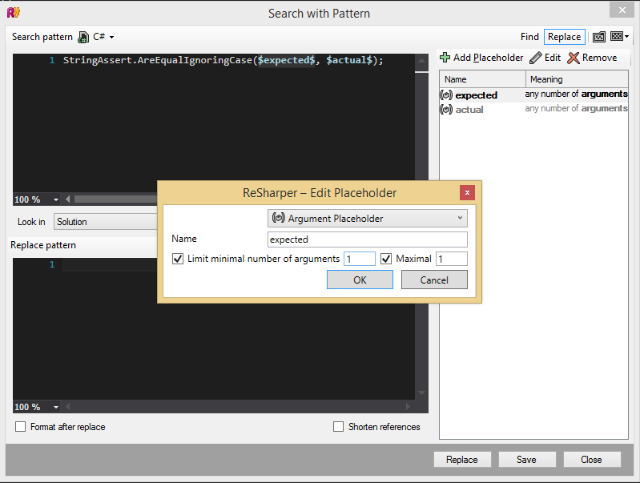

Долгое время я ждал задачи, в которой получилось бы использовать Search with Pattern -- многообещающую фичу ReSharper, которую по-русски я буду называть структурным поиском. В этом поиске используются шаблоны, которые похожи на регулярные выражения, только работающие в грамматике C#, то есть они оперируют идентификаторами, переменными, выражениями и другими структурами языка.
Например, пусть раньше в тестах для сравнения строк без учёта регистра использовался StringAssert:
StringAssert.AreEqualIgnoringCase("2013.1.1", new DateTime(2013, 1, 1).ToString("yyyy.M.d"));
//...
StringAssert.AreEqualIgnoringCase("AA"+"bb", string.Concat("aa", "BB"));
То есть, в качестве первого и второго аргументов могут передаваться произвольные выражения, а не только строковые литералы. Теперь представим, что в проекте поменялись соглашения и теперь все проверки принято записывать через Assert.That. Наш пример в новых соглашениях будет выглядеть так:
Assert.That(new DateTime(2013, 1, 1).ToString("yyyy.M.d"), Is.EqualTo("2013.1.1").IgnoreCase);
//...
Assert.That(string.Concat("aa", "BB"), Is.EqualTo("AA" + "bb").IgnoreCase);
Мы можем использовать структурный поиск для замены старого способа записи на новый. Выбрав пункт меню ReSharper -> Find -> Search with Pattern и нажав в открывшемся окне на Replace в верхнем правом углу мы приступаем к написанию шаблона.

Шаблон для поиска:
StringAssert.AreEqualIgnoringCase($expected$, $actual$);
Шаблон для замены:
Assert.That($actual$, Is.EqualTo($expected$).IgnoreCase);
expected и actual обозначают аргументы, мы задаём это явно в настройках placeholder:

Нам остаётся нажать Replace, остальное сделает ReSharper.